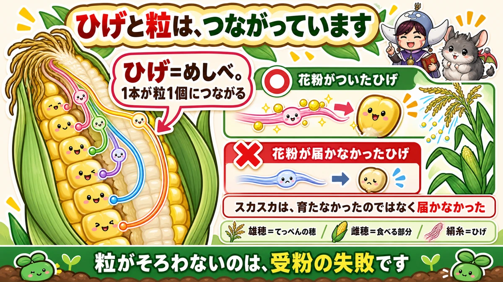
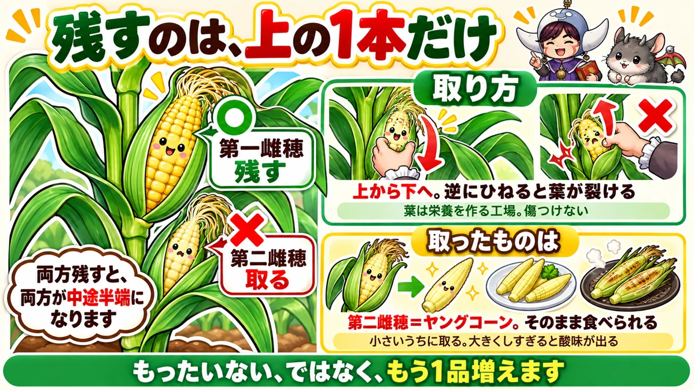
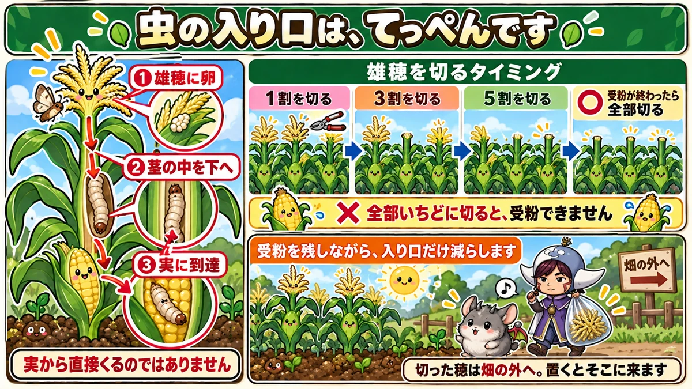

One silk, one kernel 🌽 Gappy corn is failed pollination, not bad growing

🌽 "I peeled it back and the kernels were all gaps."
🌽 "There was a caterpillar inside the cob."
🌽 "Can't you get more than one cob per plant?"
Hello, I'm Eiko. Eight years of growing vegetables organically and without pesticides, and a teaching licence in science.
The headline:
Each strand of silk connects to exactly one kernel.
So a gappy cob isn't a growing failure — it's a pollination failure. Once that's clear, everything else follows.
And at least two rows
This rule is specific to sweetcorn: never plant it in a single row. Always two or more.
If your plot is long and narrow, fold it into two short rows instead. You will get far more corn.
Gappy kernels mean pollination failed

What this diagram says （図解の文字）
- The silks and the kernels are connected
- "The silk is the style. One strand connects to one kernel"
- ○ "a silk that received pollen" ／ ✗ "a silk the pollen never reached"
- "Gaps aren't kernels that failed to grow"
The terms, briefly
- The plume at the top = the tassel. The pollen comes from here
- The part you eat = the ear
- The threads coming out of it = the silks
And the interesting part: each individual silk connects to one individual kernel.
So you get as many kernels as there were silks that caught pollen.
A gappy cob isn't kernels that failed to develop. The pollen simply never reached those silks.
Its own pollen doesn't work
Sweetcorn is cross-pollinated. A tomato sets with its own pollen; sweetcorn needs pollen from a different plant.
And it's wind-pollinated — the wind carries the pollen. (Melons and squash are insect-pollinated; different courier.)
Which is why one row fails
Now it joins up. In a single row, the wind simply carries the pollen out of the row and away.
With two or more rows, it lands on the next row. Hence: two rows. A rule that exists for sweetcorn alone.
Planting a single row along the edge of a plot is the classic first-year mistake. The plants grow beautifully and you peel one back to find a third of the kernels there.
If the weather's still, do it by hand
Some years there's no wind. Then help it:
- Cut off a tassel
- Shake it over the silks
Pollen sheds best when the tassel has opened but hasn't yet gone fully yellow, and in the morning.
One cob per plant

What this diagram says （図解の文字）
- Keep only the upper one
- ○ "first ear — keep" ／ ✗ "second ear — remove"
- "Keep both and both end up mediocre"
- "How to remove it: downward. Twist the other way and the leaf tears"
Look closely and a plant often carries two ears — an upper and a lower.
Keep the upper one. Remove the lower.
"Surely two is better?" I thought so too. Keep both and both come out mediocre. Concentrate on the upper one and the kernels pack in tightly and it's sweeter.
Remove it downward
Pull it off from top to bottom. Twisted upward, the leaf can split — and leaves are the factory, so you don't want to damage them.
What you removed is a baby corn
The good part: that second ear is a baby corn. Perfectly edible as it is — good grilled in its husk. Take it while small; left to grow, it turns sour.
Not "a waste" — "an extra dish".
The borer comes in at the top

What this diagram says （図解の文字）
- The insect's way in is the very top
- ① "eggs on the tassel" ② "down through the inside of the stem" ③ "reaches the ear"
- "It does not come at the ear directly"
- "When to cut the tassels: cut 10 %…"
Sweetcorn's worst enemy is the corn borer — the caterpillar you find inside a cob.
Most people assume it goes straight to the cob. It doesn't.
- The eggs are laid on the tassel
- The larva enters the stem and eats downward
- It arrives at the ear last
It follows the sweet stem down.
So you cut the tassels
Know the entrance and the answer is simple: remove the tassels.
But there's a conflict: the tassel is where the pollen comes from. Cut them all and nothing is pollinated.
The trick is to do it in stages
What commercial growers do:
- Cut 10 % of them first
- Then 30 %
- Then 50 %
- Once pollination is done, cut the rest
That way you keep pollen-shedding plants while steadily reducing the entrances. Pollination and pest control together.
Because it's wind-pollinated, a proportion of plants shedding pollen covers the whole plot. A useful property.
Take the cut tassels out of the plot
Easy to miss: don't leave cut tassels lying about. The borer comes to those too. Dispose of them away from the plot, or bury them. I bag them and take them home.
Two things people worry about
Basal shoots: leave them
Thin shoots appear at the base — tillers. The old advice was to remove them. The current view is that you don't need to.
They help support the plant, and removing them doesn't repay the effort. Leave them.
Blown over? It usually stands back up
It's tall, so wind flattening it is alarming. But sweetcorn rights itself. With decent feeding and a thick stem, it recovers in a few days.
If you're worried, tie neighbouring plants loosely together. Hauling it upright in a panic and tearing the roots is worse than leaving it.
Science bit: the silk is part of the pistil 🔬
Why are the silks so long?
Each one is an extended style — part of the pistil.
From every part that will become a kernel, one style extends and emerges outside the husk — because it can't catch wind-borne pollen from inside.
Hence the one-to-one relationship
One silk, one kernel isn't an arbitrary rule — it's the relationship between a pistil and its fruit.
A silk that caught pollen swells the kernel behind it. A silk that didn't leaves that kernel small.
With children, pull one silk gently and you can see which kernel it belongs to. One demonstration beats the explanation.
To sum up
- ✅ 30 cm between plants, 40–50 cm between rows
- ✅ ★Never one row. Two or more
- ✅ Cross-pollinated and wind-pollinated — it needs another plant's pollen
- ✅ One silk, one kernel. Gaps = failed pollination
- ✅ Hand-pollinate by shaking a cut tassel over the silks
- ✅ Keep the upper ear only; remove the lower one downward
- ✅ What you removed is baby corn
- ✅ The borer enters at the tassel and eats down the stem
- ✅ Cut the tassels in stages: 10 % → 30 % → 50 % → all
- ✅ Take the cut tassels out of the plot
- ✅ Leave the basal shoots, and don't panic if it blows over
You don't have to do all of it. Next year, change one thing: plant it in two rows. The evenness of the kernels is transformed 🌽
Thank you for reading!